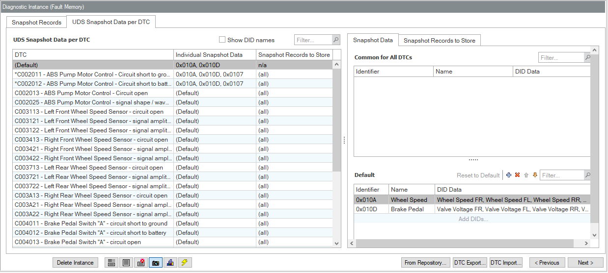

See also the overview of the GUI Snapshot Records.
[SRUI-R500] The TAB "UDS Snapshot Data per DTC" shows...
The page shows the same elements as the TAB "OBD on UDS Snapshot Data per DTC" [SRUI-R550], with minor differences as noted in the details.

UDS Snapshot Data per DTC